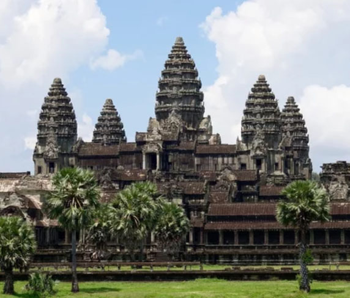
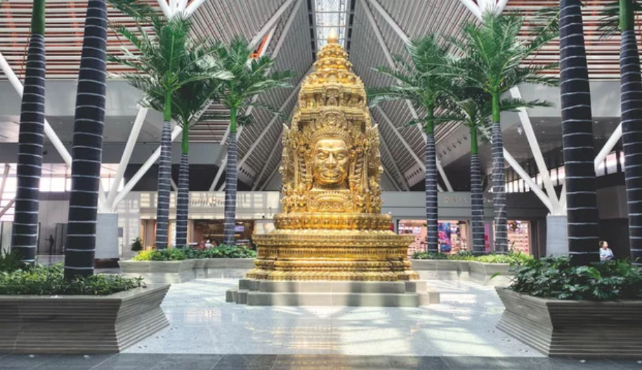
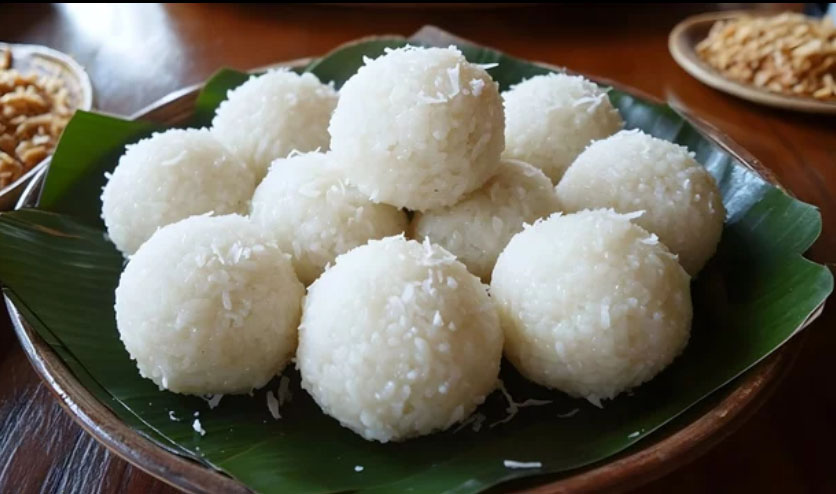

Echoes of Angkor
Iconic Landmarks
Stone walls etched with thousands of years of history. The jewels of Northern Cambodia, reflecting the glory of the Khmer Empire.

Angkor Wat
The iconic temple of the Khmer EmpireConstructed over approximately 30 years in the early 12th century under King Suryavarman II of the Khmer Empire, Angkor Wat stands as the supreme masterpiece of Khmer architecture and one of the greatest sacred monuments ever built.

Angkor Thom/Bayon Temple: Smile of the Avalokiteshvara
The last great capital of the Khmer EmpireBuilt in the late 12th century under King Jayavarman VII, Angkor Thom became the final great walled city of the Khmer Kingdom and the political and spiritual center of its golden age.

Ta Prohm
The jungle temple reclaimed by natureWhere ancient ruins and towering jungle roots intertwine, creating one of Southeast Asia’s most atmospheric and hauntingly beautiful temples.
Siem Reap:
Hub of Tradition & Innovation
As the gateway to the Angkor temples, Siem Reap is a place where vibrant modern charm and centuries-old traditional crafts coexist.

Vibrant South: Tropical Rhythm
On the street corners of Phnom Penh, French colonial architecture coexists with cutting-edge skylines. Youth gather along the Mekong river promenade, while transparent waters welcome modern travelers on the beaches of Sihanoukville. Experience the powerful energy of a Cambodia that respects tradition while charging toward tomorrow.
The noble splendor of the Cambodian Royalty
Iconic Landmarks
From the Royal Palace, steeped in history, to monuments symbolizing independence. Journey through the places that embody the soul of the South.

Royal Palace
The ceremonial heart of Cambodia’s monarchyFounded in 1866, the Royal Palace serves as the official residence of Cambodia’s monarchy, where gilded Khmer architecture, ceremonial halls, and elegant gardens reflect the enduring legacy of the royal kingdom.

Silver Pagoda
A sacred temple famed for its silver floorNamed for its floor lined with thousands of silver tiles, this sacred temple houses treasured Buddhist relics and some of Cambodia’s most revered national artifacts.

Independence Monument
A monument celebrating Cambodia’s independenceBuilt in 1958 to commemorate Cambodia’s independence from France, this lotus-shaped monument stands as a powerful national symbol of sovereignty and remembrance.
Exploring Major Cities

Phnom Penh
A vibrant capital where traditional markets and sophisticated rooftop bars coexist in dynamic harmony.
View Details arrow_forward
Kampot
A town wrapped in riverside tranquility and the lush green of pepper plantations, where nostalgic time flows by.
View Details arrow_forward
Sihanoukville
White sandy beaches and emerald waters. Cambodia's premier beach destination with modern resorts.
View Details arrow_forwardCuisine of Cambodia
A cuisine shaped by ancient kingdoms, river life, and generations of shared tradition. From fragrant street-side noodles and smoky grilled delicacies to coconut-rich curries and fresh island seafood, Cambodia’s culinary heritage offers a warm and soulful journey through the heart of Southeast Asia.
Flavors of Cambodia
A journey through rich spices, river traditions, and timeless Khmer cuisine.
Fish Amok
One of Cambodia's finest royal dishes, steamed in banana leaves with aromatic coconut curry.

Kampot Pepper
Praised as the world's best pepper, its rich aroma elevates simple ingredients to the peak of flavor.
Samlor Korko
A hearty traditional soup rich with herbs, vegetables, and the soul of Khmer home cooking.
Cambodian Desserts
Sweet coconut delights inspired by tradition and tropical flavors.
Num Ansom
A complex, spicy broth infused with coconut milk and over 20 aromatic herbs and spices.
Cha Houy Teuk
A complex, spicy broth infused with coconut milk and over 20 aromatic herbs and spices.

Nom Plae Ai
A complex, spiand spices.
カンボジアの歴史
Kingdom of Cambodia
From the grandeur of the Khmer Empire to centuries of resilience and renewal,
Cambodia’s history is shaped by sacred traditions, powerful kingdoms, and enduring cultural heritage.
古代
扶南王国 （紀元前1世紀～6世紀）
東南アジア初期の交易国家で、インド文化の影響を受けて繁栄。東南アジア最古の王朝
6世紀頃から真臘の圧迫を受けて衰退し、7世紀中頃滅亡
真臘王国 （6世紀～802年）
扶南王国を吸収し、カンボジアの主要な王国として発展。
クメール人によって建国、 ヒンドゥー教を国教化
扶南を滅ぼし、都をアンコールに定める
8世紀初めから9世紀の初めに、北の陸真臘と南の水真臘に分裂
中世
クメール王朝（アンコール王朝） （802年～1431年）
ジャヤーヴァルマン2世による統一後、アンコール・ワットなどの壮大な寺院を建設し、文化の黄金時代を築く。
9世紀～13世紀にかけてのアンコール朝の時代に全盛期
9世紀末～12世紀アンコール遺跡を建設。9世紀から14世紀にかけてのクメール美術のすべてを伝えている
アンコール・ワット（寺院）（スーリヤヴァルマン2世）
アンコール・トム（王城）（12世紀後半、ジャヤーヴァルマン7世）
暗黒時代（1431年～1863年）
シャム（タイ）やベトナムの侵攻を受け、王国が衰退。
近世
フランス保護領時代（1863年～1953年）
フランスの植民地支配下に置かれる。
1863年 Norodom 王がフランスと保護条約を結ぶ
1884年 フランスがさらに強い統治権を確立（実質植民地化が進行）
近現代・現代
カンボジア王国（ノロドム・シハヌーク国王による独裁的な君主制国家） （1953年～1970年）
フランスから独立し、立憲君主制を採用。
ジュネーヴ休戦協定（1954年）で完全独立を達成
国王シハヌーク首相（任1955-60）・元首（任1960-70）、中立政策
1955年にシアヌークが王位を父に譲って自ら政治家となり、サンクムを結成してからは実質的な一党独裁体制へと移行
クメール共和国 （親米派の軍事政権）（1970年～1975年） 内戦を経て共和制に移行。
親米右派のロン・ノル国防相がクーデタ（1970年.3）
シハヌークを国家元首から解任し、クメール共和国を成立
シハヌークは亡命先の北京でカンボジア王国民族連合政府を樹立。カンプチア民族統一戦線を結成
米軍カンボジアに侵攻(1970.4)「ホーチミン・ルート」(北ベトナムが解放戦線を援助するために武器・物資などを輸送したルート)を遮断目的。内戦激化(ロン・ノル政権とカンプチア民族統一戦線)
民主カンプチア （ポル・ポト政権）（1975年～1979年）
クメール・ルージュ（KR）が内戦に勝利。ポル・ポト政権による極端な共産主義政策が実施される。
・クメール・ルージュが首都プノンペンに入城→解放勢力が勝利（1975）
・「カンボジア民主国憲法」を公布（1976.1）
・ポル・ポト（※本名：サロット・サル）※指導の共産主義勢力「クメール・ルージュ」 シハヌークを擁立
・国家元首にはシハヌークが就任→辞任（1976.4）※形式上は本人の申し出による辞任、ここから完全な軟禁生活へ
・ポル・ポト政権成立（親中国派）。ポル・ポト首相（任1976～79）
「原始共産制」：共産主義にもとづく強力な農業本位と民族主義強力な農業本位と民族主義。中産階級的な都市住民を強制的に農村に入植、強制労働。頭脳階級や留学生200万人を超えるともいわれる虐殺・粛清 プノンペンはゴーストタウン化
・ベトナムと国境紛争（1978.1）→ベトナムと断交
カンプチア人民共和国（親ベトナム政権）（People's Republic of Kampuchea）（1979年～1993年）
・ベトナムはカンボジアに侵攻（1979年1）。 プノンペンを攻略、ポル・ポト政権追放。ベトナムに亡命していたヘン・サムリンを首相に擁立して侵攻。ポル・ポトは密林地帯に逃亡。
・親ベトナムの「カンプチア人民共和国」（プノンペン（ヘン・サムリン）政権）（1979-91）樹立
○内戦状態に
・1979年-82年：ヘン・サムリン政権（親ソ連・ベトナム）とポル・ポト派（中国支援）の対立。中ソ対立 →中越戦争（1979年）に
・1982年7月：民主カンボジア三派連合成立。反ベトナム三派の連合政府
三派：ポル・ポト派、シハヌーク派、ソン・サン派（ロン・ノル政権の流れを受け継ぐ）
・1982年-91年：ヘン・サムリン軍政権（親ソ連・ベトナム）と民主カンボジアの内戦
・ベトナム軍撤退（1989年9月）←ベトナム首相ファン・フンが急死
カンボジア王国（再建） ノロドム家による君主制（1993年～現在）
1991年、「カンボジア和平会談」＠パリ
・ヘン・サムリン政権と反対勢力が和解、調印、内戦終結
1992年、国連カンボジア暫定機構（UNTAC）活動開始（1992～93年、日本初の国連PKO参加。）
1993年、UNTAC監視下で民主的な選挙を実施（王党派フンシンペック党勝利。ラナリット第一首相（フンシンペック党）、フン・セン第二首相（人民党：旧プノンペン政権）の2人首相制連立政権。）新憲法で王制復活。
・国王シハヌーク（位1993-2004）
・ポル・ポト死去→ポル・ポト派壊滅（1998年）
・フン・セン政権成立（1998年）←クーデタ（1997年）
・シハヌーク国王引退、シハモニ新国王即位（2004年.10）
2023年8月、フン・セン氏の長男であるフン・マネット氏が新しい首相に就任
カンボジアの歴史は、文化的な繁栄と政治的な変遷が交錯しています。
ベトナムと比較すると、カンボジアが1953年にフランスから独立したプロセスは、驚くほど平和的で「ドロドロ」していませんでした。
ベトナムがフランスを相手に何万人もの血を流す大戦争（第一次インドシナ戦争）を戦っていたのに対し、カンボジアは若きシアヌーク国王による極めてスマートな外交戦術によって、血を流さずに独立を勝ち取りました。
1. ベトナムが盾となり、フランスを疲弊させていた
当時、ベトナムではホー・チ・ミン率いる共産派ゲリラ（ベトミン）が、フランス軍と泥沼の全面戦争を繰り広げていました。フランスはベトナム戦線に資金も兵力も注ぎ込み、完全にヘトヘトになっていました。そのため、隣国カンボジアにまで大規模な軍隊を割いて独立運動を力で抑え込む余裕が、フランスには残されていませんでした。
2. シアヌーク国王の「国際世論を味方につける」ゲリラ外交
シアヌーク国王は、武力ではなく「外交の力」でフランスを追い詰めました。
王国の十字軍：シアヌークは自ら「独立のための王国十字軍」と称して世界を飛び回りました。
フランスへの恥をかかせる戦術：アメリカやカナダのメディアに対し、「フランスはカンボジアに自由を与えない！」と大々的にアピールして国際世論を味方につけました。
隣国への一時亡命：さらに「独立を認めないなら戻らない」とタイへ一時亡命するパフォーマンスを敢行し、国際社会の中でフランスの立場を徹底的に悪くさせました。
結果、国際的な批判に耐えかね、ベトナムで手一杯だったフランスは、1953年11月にカンボジアの完全独立をあっさりと認めることになりました。
3. だからこそ「立憲君主制」からスタートできた
ベトナムはフランスを武力で追い出したため、そのまま共産主義（北）と親米資本主義（南）に国が真っ二つに引き裂かれ、さらなる泥沼の「ベトナム戦争」へ突入していきました。しかし、カンボジアは戦争をせずに国王が主導して独立を勝ち取ったため、国が引き裂かれることなく、「王政（立憲君主制）」という古い伝統の形をそのまま維持してスムーズに新国家をスタートさせることができました。
シアヌークが王位を捨てて政治家になった理由
憲法上の制限を回避するため：
当時の憲法では、国王は政治に直接介入できませんでした。シアヌークは自分の手で政治を主導したいと考えました。
選挙で圧倒的な正統性を得るため：
1955年、王位を父（ノロドム・スラマリット）に譲り、自身は「殿下」の身分で政治運動組織「サンクム（社会主義人民共同体）」を結成しました。
国民的人気の利用：
元国王という絶対的なカリスマ性を武器に選挙に臨み、大勝して首相に就任しました。これにより、王政の権威と民主的な選挙の勝利という「二重の正統性」を手に入れました。
「中立外交の限界」がもたらした経済の破綻
シアヌークは冷戦下において、アメリカ・ソ連・中国のいずれの陣営にも属さない「中立」を掲げ、国の独立を守ろうとしました。
シアヌークがカンボジア東部領内に北ベトナム軍（共産勢力）が基地を作ることを黙認したため、軍部・エリート層の不満が爆発しました。北ベトナム軍が領内に居座ったため、アメリカ軍がカンボジア領内への秘密爆撃を開始しました。これにより国土が荒廃し、中立政策は完全に破綻しました。反共産主義だったカンボジア軍エリート（ロン・ノル将軍ら）によって病気療養と外交のために海外（フランス、ソ連、中国）を訪問している隙を突かれ、1970年3月、シアヌーク国家元首の地位を解任されました。
ロン・ノル政権誕生（1970年クーデター）
1970年3月、ロン・ノル将軍がアメリカの支援を受けて無血クーデターを起こし、シハヌーク政権を追放して誕生した親米右派政権。1970年10月に王制廃止。
シアヌークに王位を譲られた父のスラマリット国王は、1960年に崩壊の10年も前に死去していました。父親の死後、シアヌークは新しい国王を即位させず、自ら「国家元首（プレジダン）」という新しい役職に就きました。そのため、1960年から1970年までのカンボジア王国は「国王が不在のまま、元国王のシアヌークが国家元首として支配する国」という奇妙な体制でした。ロン・ノルは長年、警察トップや国防相、首相を歴任し、シアヌーク体制を影で支えた忠実な部下でした。シアヌークを追放した直後は、形式的に「カンボジア王国」のままでしたが、半年後の1970年10月に王制そのものを廃止し、「クメール共和国」へと国名を変えました。
内戦の激化: 政権の誕生と米軍の侵攻に対し、（北京に）亡命したシハヌークが共産勢力と手を結んだことでクメール・ルージュ（ポル・ポト派）が急拡大しました。
国土の荒廃：アメリカ軍は領内の北ベトナム軍を壊滅させるためカンボジアの農村部に大量の爆弾を投下しました。数万人から数十万人とも言われる罪のない農民が犠牲になりました。
敵への寝返り：家や家族を失った農民たちの激しい怒りは、アメリカと手を組んだロン・ノル政権に向かいました。これが「反米・反ロン・ノル」を掲げるポル・ポト派への強力な支持基盤となりました。
政権の終焉: アメリカ軍の撤退後は国内の統制を失い、1975年4月17日、ポル・ポト派（クメール・ルージュ）によって首都プノンペンが陥落。ロン・ノルは国外へ亡命し、政権は崩壊しました。
なぜポル・ポトはそこまで「知識人（医師や教師）」を敵視したのか
「知識人」というだけで処刑の対象に
ポル・ポト派は、西洋の医学や近代的な知識を「悪」とみなしました。
・医師であること（眼鏡をかけている、フランス語が話せるなど）がバレただけで、即座に処刑場（キリング・フィールド）へ送られました。
・生き残ったわずかな医師たちは、自分が医師であることを必死に隠し、文字の読めない農民のふりをして過酷な強制労働を耐え抜いた人たちだけでした。
ポル・ポトが医師や教師などの「知識人」を徹底的に敵視した理由は、彼が「資本主義や外国の汚れがない、純粋な原始共産主義社会」を本気で作ろうとしたからです。 彼にとって知識人は、理想の国作りを邪魔する「最も危険な敵」でした。
ポル・ポト政権崩壊
崩壊への直接の引き金：ベトナムとの国境紛争 ポル・ポトは熱狂的な民族主義者であり、かつてカンボジアの領土だったメコンデルタ地方（現ベトナム南部）の奪還を本気で目指していました。
相次ぐ越境虐殺：ポル・ポト軍はベトナム領内の村をたびたび襲撃し、ベトナム人の虐殺を繰り返しました。
ベトナム側の逆鱗：アメリカとの戦争に勝ったばかりで強大な軍事力を持っていたベトナムは、ポル・ポト政権を「看過できない脅威」とみなしました。
電撃的な崩壊（1978年12月〜1979年1月） 1978年12月25日、ベトナム軍は十数万人の大軍でカンボジアへ本格侵攻を開始しました。
わずか2週間で首都陥落：極端な強制労働や虐殺、飢餓で自国民を疲弊させていたポル・ポト軍には、ベトナムの正規軍と戦う力が残っていませんでした。国民も政権を誰も守ろうとはしませんでした。
1979年1月7日：ベトナム軍が首都プノンペンを占領し、ポル・ポト政権はあっけなく崩壊しました。
崩壊後のポル・ポト派の行方 政権を追われたポル・ポトとクメール・ルージュの残党は、タイ国境付近のジャングルへと逃げ延びました。
ゲリラ組織として存続：冷戦の複雑な思惑（ベトナムの後ろ盾であるソ連を嫌った中国・アメリカ・タイが裏でポル・ポト派を支援したこと）により、彼らはその後も十数年にわたりゲリラ戦を続け、カンボジアを泥沼の内戦へと引きずり込みました。
ベトナムの傀儡 ヘン・サムリン政権
ベトナム軍は、プノンペンに「ヘン・サムリン」をトップとする新しい親ベトナム政権を立てました。ベトナム（ヘン・サムリン政権）を追い出したいシアヌークは、ジャングルに逃げたポル・ポト派の残党、および他の反ベトナム右派勢力と手を組み、「民主カンプチア連合政府（三派連合）」を結成しました。かつて自分を軟禁し、親族を殺したポル・ポト派と、国を守るために再び同盟を組むという非情な選択をしたのです。
1979年2月中越戦争：ベトナムがポル・ポト政権を打倒したことに激怒した中国が、1979年2月にベトナムへ侵攻したことで勃発した戦争。この中越戦争が起きたことで、カンボジアの内戦は「中国・アメリカ」対「ソ連・ベトナム」という世界規模の代理戦争（冷戦の最前線）へと完全に組み込まれてしまいました。
政権崩壊の主因：後ろ盾であるソ連の経済破綻と、ベトナム軍の完全撤退
政権の末路完全に消滅したのではなく、「カンボジア国（フン・セン派）」へ改称・改組し、現在の与党へと血筋が続いている。
その後の歴史的ポイント：負けなかったヘン・サムリン派
ポル・ポト派やロン・ノル政権とは違い、ヘン・サムリン派は完全に打倒されたわけではありません。実務のトップだったフン・セン（首相）らは、1993年の選挙後も上手に立ち回り、シアヌーク派と連立政権を組んで権力を維持し続けました。結果として、このヘン・サムリン政権の系譜（現在のカンボジア人民党）が、2026年現代に至るまでカンボジアの絶対的な一党優位体制を築き上げています。
カンボジア内戦の最終的な終結は、1980年代末から1990年代初頭にかけての「冷戦の終結」と完全に直結しています。
冷戦が終わり、大国同士の対立が消滅したことで、カンボジアを舞台にした代理戦争を続ける理由がなくなりました。
1. ソ連の破産とベトナムへの援助停止（最大の転換点）
1980年代後半、ソ連の経済は完全に破綻しかけていました。新指導者となったゴルバチョフは、国内の立て直し（ペレストロイカ）に集中するため、海外への巨額の軍事援助を打ち切る決断をします。
毎日のようにソ連から莫大な資金と石油をもらっていたベトナムは、突然「命綱」を絶たれました。
経済が限界を迎えたベトナムは、カンボジアに十数万人の軍隊を駐留させ続けることが不可能になり、1989年にカンボジアからの完全撤退を余儀なくされました。
2. 中国とアメリカの「ポル・ポト支援」の大義名分が消滅
ベトナム軍が撤退したことで、中国やアメリカにとっても、ジャングルに潜むポル・ポト派（クメール・ルージュ）を裏から支援する大義名分（＝反ソ連・反ベトナム）がなくなりました。
1991年にソ連が崩壊すると冷戦は完全に終結し、米・中・ソ（ロシア）の3大国は「カンボジア問題の平和解決」で一致団結することになります。
3. 国連の歴史的介入と和平（1991〜1993年）大国たちの支援が止まり、武器も資金も失ったカンボジア国内の全4勢力（ヘン・サムリン派、シアヌーク派、ポル・ポト派、右派）は、これ以上戦争を続けられなくなりました。
1991年「パリ和平協定」：冷戦終結の直後、全勢力が集まって和平に調印。
国連カンボジア暫定統治機構（UNTAC）：国連が一時的にカンボジアの統治を引き受け、自衛隊の派遣も含めた国際社会が主導して1993年に民主選挙を実施しました。
新憲法で王制復活
ヘン・サムリン政権（カンボジア人民共和国）の崩壊は、内戦での敗北によるものではなく、「冷戦の終結」と「ベトナム軍の撤退」によって、自然に次の新しい合法国際体制へ移行（吸収・解消）したという形をとりました。
国名が正式に「カンボジア王国」へと改称され、シアヌークが再び「国王」に即位したことをもって、1993年〜の新しいカンボジア王国がスタートしました。
「かつての王国」との違い
名目上は1953年〜1970年の「カンボジア王国」の復活でしたが、中身（政治のルール）は全く異なっていました。
昔の王国（1953〜1970）：シアヌーク国王が自ら首相となり、すべての実権を握る「絶対的な独裁国家」。
新しい王国（1993〜）：新憲法で「国王は国を統治せず、君臨するのみ（象徴）」と定められた、日本やイギリスのような「象徴君主制」。
フン・セン（旧ヘン・サムリン派）が『実権（首相の座）』を奪いシアヌークが国王（象徴）になった
実態としては、1979年のヘン・サムリン政権誕生からずっと実権を握り続け、1993年の王国復活後も、1997年のクーデター前からも、実質的に国を動かしていたのはフン・セン氏ただ一人だったということになります。
1. 1993年〜：形は「共同首相」、中身は「フン・センの支配」1993年の選挙で負けたにもかかわらず、武力を背景に「第二首相」の座をもぎ取ったフン・セン氏は、政権内で着実に基盤を固めました。
第一首相の孤立：1位で第一首相になったラナリット王子（シアヌークの息子）は、形式的なトップにすぎませんでした。
2. 1997年：邪魔者を消すための武力衝突（クーデター）
実権のないラナリット王子が、ポル・ポト派の残党を取り込んでフン・セン氏に対抗しようと動き出しました。これを受け、フン・セン氏は先手を打って1997年7月に首都プノンペンで大規模な軍事衝突（事実上のクーデター）を起こします。自らの息がかかった軍を動かして、ラナリット王子を海外へ追い出し、政敵を完全に排除しました。
3. 1998年：形も中身も「完全なフン・セン独裁」へ
ライバルがいなくなった状態で1998年の総選挙を迎え、フン・セン派（カンボジア人民党）が大勝。ここで初めて、名実ともに「単独の首相（フン・セン政権）」が正式にスタートしました。
ポル・ポト派の自滅とポル・ポトの死（1997年〜1998年）
ポル・ポトの死（1998年4月）：1979年のヘン・サムリン政権誕生以来、フン・セン氏にとっての最大の課題は、ジャングルからゲリラ攻撃を仕掛けてくるポル・ポト派の存在でした。ポル・ポトが死に、組織が完全にバラバラになったことで、カンボジア国内の「戦争の火種」が根こそぎ消滅しました。残されたクメール・ルージュの兵士たちは、フン・セン氏が提示した「武器を捨てれば罪に問わない（投降・融和政策）」という条件に応じて、次々とフン・セン政権に降伏しました。
選挙で「平和をもたらした英雄」として大勝（1998年7月）：フン・セン氏は、前年（1997年）に武力でラナリット王子を追放していたため、国際社会から「独裁者」として激しい批判を浴びていました。しかし、ポル・ポトの死と組織の崩壊により、フン・セン氏は国民に対して「私が20年近く続いた内戦を完全に終わらせ、国に本当の平和をもたらした」と絶大なアピールをすることができました。結果、フン・セン氏のカンボジア人民党が選挙で大勝し、名実ともに単独の「フン・セン政権（完全な独裁体制）」が誕生しました。
現在のシハモニ国王（ノロドム・シハモニ）はラナリット王子ではなく、その異母弟（お母違いの弟）にあたる人物です。
なぜ長男であり、かつて第一首相も務めたラナリット王子ではなく、シハモニ氏が新国王になったのか、その理由は主に3つあります。
1. 政治に深く関わりすぎていたラナリット王子
カンボジアの憲法では「国王は政治を行わない（象徴）」と定められています。
ラナリット王子：シアヌーク派の政党トップとしてフン・セン氏と激しく権力争い（1997年の衝突など）をしてきた「どっぷり政治の世界にいた人物」でした。
懸念点：ラナリット氏が王位に就けば、再びフン・セン政権との間に激しい政治的対立が再燃し、国が不安定になるリスクがありました。実権を握るフン・セン首相側としても、かつての政敵であるラナリット氏の即位は絶対に受け入れられませんでした。
2. 政治に全く無色で、芸術の道を歩んでいたシハモニ氏
これに対し、シハモニ氏は少年時代から高貴な文化人として生きてきました。
経歴：チェコのプラハに留学してクラシックバレエやダンスを学び、フランスを拠点に高名な振付師・芸術家として活躍していました。その後、ユネスコのカンボジア大使なども務めました。
メリット：国内の政治闘争には一切関わっていなかったため、フン・セン政権にとっても、国民にとっても「完全に中立で、誰からも敵視されないクリーンな存在」として理想的でした。
3. 母（モノニエト王妃）の存在
シハモニ国王の母親であるモノニエト王妃（シアヌーク前国王の最後の妻）は、シアヌーク氏から最も深く愛され、政界や王室に強い影響力を持っていました。彼女が自分の実子であるシハモニ氏の即位を強く望み、裏でフン・セン首相側と合意を取り付けたことも決定打となりました。（※ラナリット王子の母親は別の女性です）
シハモニ国王は即位後も政治には一切口を出さず、文化・芸術の振興や慈善活動に専念する「完璧な象徴国王」として、現在（2026年）に至るまでフン・セン体制（現在のフン・マネット政権）の下で国民から深く敬愛され続けています。一方のラナリット王子は、その後も政治活動を細々と続けましたが、2021年にフランスで亡くなりました。
世界でも最先端のキャッシュレス社会を一足飛びに実現した国
「アムリットのような金融機関の成長」と「バコンという最先端技術の導入」
フン・セン政権が「治安の安定」と「外資への開放」を徹底：カンボジアの経済成長と貧困削減の大きな推進力となった「アムリット（Amret）」などのマイクロファイナンス機関（小口金融機関）の創設や急成長には、フン・セン政権の安定政策を背景に、国際的なNGOや欧米の政府系開発金融機関、そして国際金融機関が深く関わってきました。
フランスのNGO「GRET（技術研究・交流グループ）」：アムリットの生みの親です。
世界的な政府系金融機関が株主として資金とノウハウを注入：IFC（国際金融公社）FMO（オランダ開発金融公庫）Advans Group
台湾の永豊銀行（シハノパック銀行）：2024年〜2025年にかけてアムリットの株式を段階的に100%取得（買収総額約670億円）し、さらなるデジタル化や拡大を進めています。
元々は「銀行口座を持てない貧しい農民にお金を貸す」という慈善事業（NGO）から始まったアムリットですが、欧米の開発金融機関が育て、最終的にアジアの民間メガバンクが買い取るという形で、カンボジアの民間経済を爆発的に発展させるシステムへと成長しました。
カンボジアの中央銀行デジタル通貨（CBDC）である「バコン（Bakong）」の開発を手がけたのは、日本のブロックチェーン・スタートアップ企業「ソラミツ（SORAMITSU）」です。
この連携は、新興国が古いインフラを飛び越えて最新技術を導入する「リープフロッグ（カエル跳び）現象」の世界的モデルとして知られています。
2010年代後半、カンボジア国立銀行（中央銀行）は、国内の銀行口座保有率が20%未満と低い一方、スマホの普及率が100%を超えている状況に着目しました。自国の法定通貨「リエル」の流通を高め、誰もがスマホで決済できる仕組みを作るため、優れた技術を持つパートナーを探していたところ、ソラミツが開発を主導するブロックチェーン基盤「Hyperledger Iroha（ハイパーレジャー・イロハ）」の「高い安全性」と「処理速度の速さ」が評価され、共同開発がスタートしました。
2020年の誕生と、驚異的な普及
2020年10月に正式運用が始まった「バコン」は、世界初の中央銀行デジタル通貨システムの一つとなりました。
手数料ゼロ・瞬時決済：銀行口座を持たない農民や都市住民でも、電話番号さえあればスマホアプリで無料かつ安全に個人間送金やQRコード決済ができるようになりました。
爆発的なシェア：導入からわずか数年で、カンボジアの人口の大部分（1000万アカウント以上）に利用される、国に欠かせない巨大インフラへと急成長しました。
カンボジア（フン・セン・マネット親子体制）と北朝鮮（金一族体制）の違い
どちらも長年にわたり特定の家族がトップに君臨する「世襲の独裁体制」ですが、「経済を世界に開いているか」と「国民の自由度」の2点において、中身は180度異なります。世界から孤立して経済が破綻している北朝鮮に対し、カンボジアは資本主義をフルに活用して驚異的な豊かさを手に入れた「開かれた独裁国家」です。
「北朝鮮」は今もなお古い社会主義の思想としがみつき、国民を飢えさせています。しかし「カンボジア」は、過去の凄惨な思想の失敗から学び、政治体制は独裁でありながらも、経済の仕組みは世界で最も自由な資本主義を取り入れました。「何を正しいと信じるか」という指導者の思想一つで、何百万人もの命が奪われることもあれば、最貧国からデジタル先進国へ跳ね上がることもあります。歴史を振り返ると、「思想は、時に武器よりも強く恐ろしいものであり、だからこそ最も慎重に扱わなければならないものだ」と強く実感させられます。